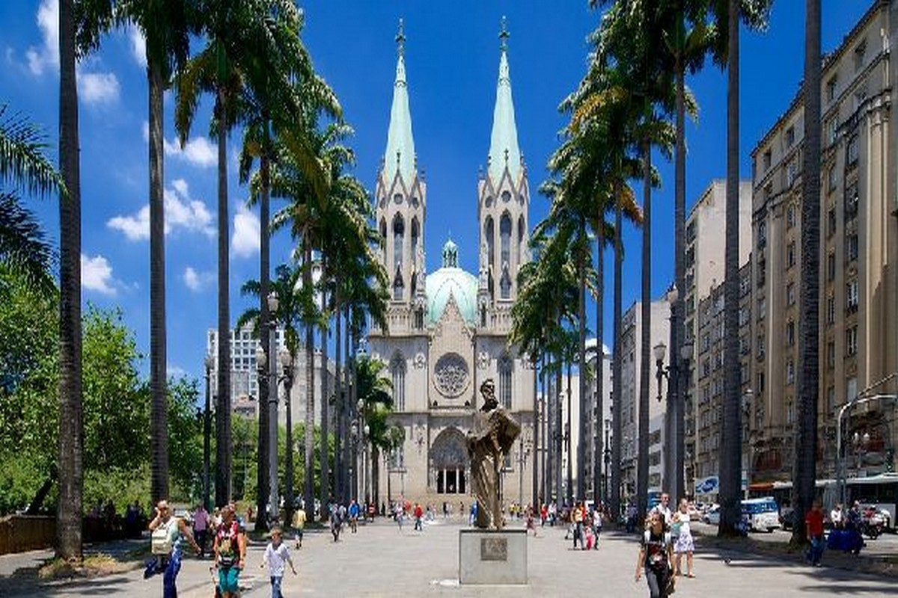
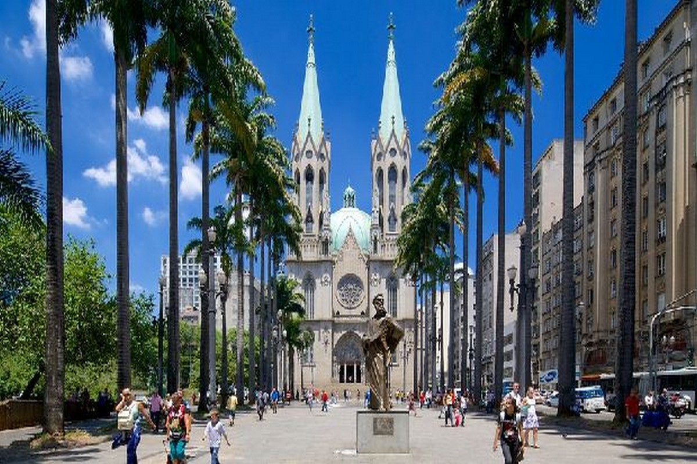
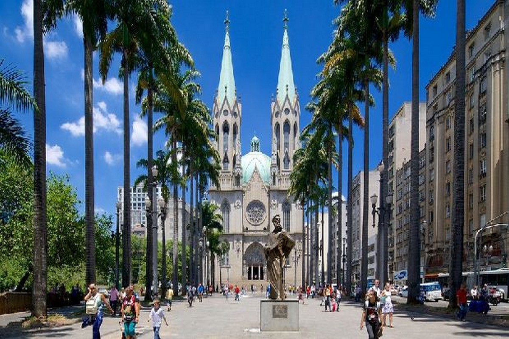
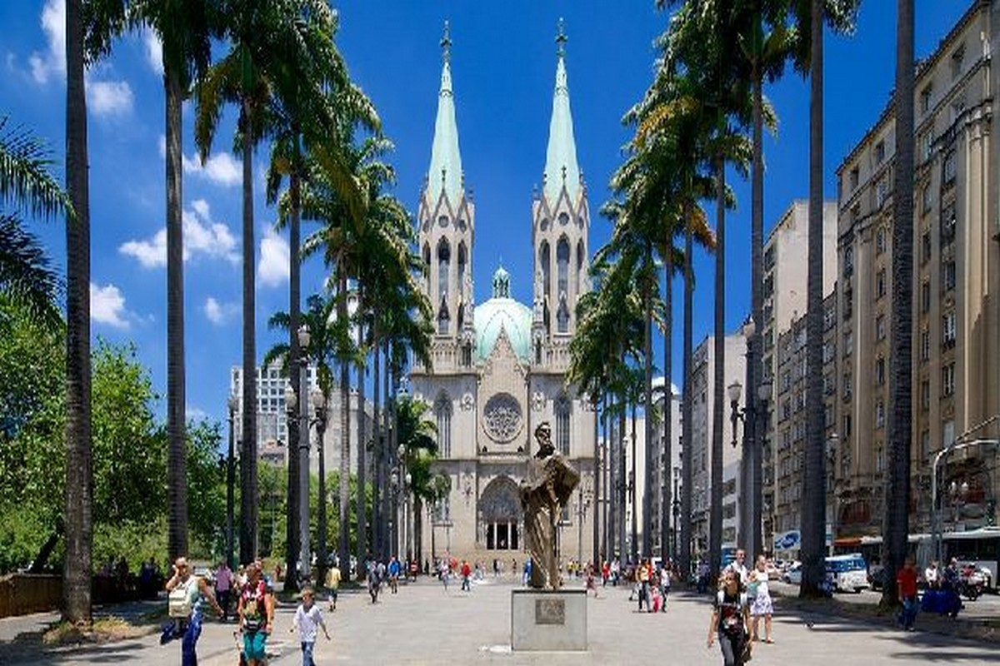

É um município brasileiro, capital do estado homônimo e principal centro financeiro, corporativo e mercantil da América do Sul. É a cidade mais populosa do Brasil, do continente americano, da lusofonia e de todo o hemisfério sul. São Paulo é a cidade brasileira mais influente no cenário global, sendo, em 2016, a 11.ª cidade mais globalizada do planeta. Fundada em 1554 por padres jesuítas, a cidade é mundialmente conhecida e exerce significativa influência nacional e internacional, seja do ponto de vista cultural, econômico ou político.
O Museu de Arte de São Paulo é um museu privado sem fins lucrativos, fundado em 1947 pelo empresário e mecenas Assis Chateaubriand (1892-1968), tornando-se o primeiro museu moderno no país. Chateaubriand convidou o crítico e marchand italiano Pietro Maria Bardi (1900-1999) para dirigir o MASP, e Lina Bo Bardi (1914-1992) para desenvolver o projeto arquitetônico e expográfico. Mais importante acervo de arte europeia do Hemisfério Sul, hoje a coleção do MASP reúne mais de 11 mil obras.
O Teatro Municipal de São Paulo foi construído durante a Primeira República (1889-1930) sob influência da Belle Époque europeia. A inauguração do Teatro Municipal de São Paulo aconteceu no dia 12 de setembro de 1911, entretanto, a construção do Teatro teve início no ano de 1903,desde então, passou a proporcionar as impressões artísticas vindas da Europa, principalmente à elite. Imponente e rebuscado, idealizado nos moldes do teatro da Ópera de Paris, o Theatro foi construído para satisfazer os parâmetros europeus de cultura da então aristocracia cafeeira.
Em 1913, iniciou-se a construção da Catedral como é hoje, elaborada pelo alemão Maximilian Emil Hehl, professor de Arquitetura da Escola Politécnica. O templo foi inaugurado em 25 de janeiro de 1954, na comemoração do 4º Centenário da Cidade de São Paulo, ainda sem as duas torres principais.A primeira versão da igreja foi instalada em 1591, quando o cacique Tibiriçá escolheu o terreno onde se encontraria o primeiro templo da cidade, construído em taipa de pilão (parede feita de barro e palha socados, estruturados em

| Nome do prefeito | Ano eleito | Partido | |
|---|---|---|---|
| Ricardo Nunes | Início em 16 de maio de 2021 | MDB | Atual |
| Bruno Covas | 6 de abril de 2018 até 16 de maio de 2021 | PSDB | |
| João Doria | 1 de janeiro de 2017 | PSDB | |
| Fernando Haddad | 1 de janeiro de 2013 | PT |
| Dados tecnicos baseados em 6 pontos , sendo eles Populaçao, trabalho e rendimento, educação, economia, saúde, território e ambiente | ||
|---|---|---|
| POPULAÇÃO | População estimada [2021] | 12.396.372 pessoas |
| TRABALHO E RENDIMENTO | Salário médio mensal dos trabalhadores formais | 4,1 salários mínimos |
| EDUCAÇÃO | Matrículas no ensino fundamental | 1.378.775matrículas |
| ECONOMIA | PIB per capita | R$ 62.341,21 |
| SAÚDE | Mortalidade Infantil | 11,21 óbitos por mil nascidos vivos |
| TERRITÓRIO E AMBIENTE | Área da unidade territorial | 1.521,202km² |
Todos os dados usados na tabela sao fornecidos pelo IBGE : Site do IBGE